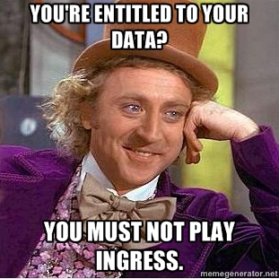
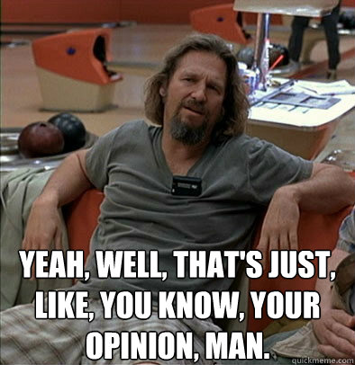

<!doctype html>
<html lang="en">
	<head>
		<meta charset="utf-8">

		<title>A Big Mess - Ethical Quandaries Surrounding Data in an Age of Mashups</title>

		<meta name="description" content="Ethical questions and quandaries surrounding data in an age of mashups.">
		<meta name="author" content="Joe Bauser">

		<meta name="apple-mobile-web-app-capable" content="yes" />
		<meta name="apple-mobile-web-app-status-bar-style" content="black-translucent" />

		<meta name="viewport" content="width=device-width, initial-scale=1.0, maximum-scale=1.0, user-scalable=no">

		<link rel="stylesheet" href="css/reveal.min.css">
    <link rel="stylesheet" href="css/theme/default.css" id="theme">

    <!-- Presentation specific styles -->
    <link rel="stylesheet" href="big_dirty_mess.css">

		<!-- For syntax highlighting -->
		<link rel="stylesheet" href="lib/css/zenburn.css">

		<!-- If the query includes 'print-pdf', use the PDF print sheet -->
		<script>
			document.write( '<link rel="stylesheet" href="css/print/' + ( window.location.search.match( /print-pdf/gi ) ? 'pdf' : 'paper' ) + '.css" type="text/css" media="print">' );
		</script>

		<!--[if lt IE 9]>
		<script src="lib/js/html5shiv.js"></script>
		<![endif]-->
	</head>

	<body>

		<div class="reveal">

			<!-- Any section element inside of this container is displayed as a slide -->
			<div class="slides">

				<section>
					<h1>A Big Mess</h1>
					<h3>Ethical quandaries over data in an age of Mashups</h3>
					<p>
            <small><a href="http://coderjoe.net">Joe Bauser</a> / <a href="http://twitter.com/coderjoe">@coderjoe</a> / <a href="http://coderjoe.net">coderjoe.net</a></small>
					</p>
        </section>

        <section>
          <h2>Who am I?</h2>
          <p>
            <ul>
              <li>Software Developer</li>
              <li>Open source enthusiast</li>
              <li>Small-time Open source contributor</li>
              <li>Casual gamer</li>
            </ul>
          </p>
        </section>

        <section>
          <h2>I am not an Ethicist</h2>
          <aside class="notes">
            This is why I'm here talking about my concerns.<br/>
            Lao Tzu those who know don't... and I'm up here speaking.
          </aside>
        </section>

        <section>
          <p>
            
          </p>

          <aside class="notes">
            Internet is ubiquitous.
            Poll audience about social network usage.

            <ol>
              <li>Facebook</li>
              <li>Youtube</li>
              <li>Reddit</li>
              <li>Google</li>
              <li>Twitter</li>
            </ol>
          </aside>
        </section>


        <section>
          <h2>It's all about the data</h2>
          <small>This isn't really news.</small>

          <aside class="notes">
            ...the idea that data is king.<br/>
            ...the vast amount of free content provided for very little.<br/>
            ...all of the actions that are of worth.<br/>

            <ul>
              <li>Connections</li>
              <li>Speech patterns</li>
              <li>Associations between reactions and real time events</li>
              <li>Correlation between social graph and ... anything</li>
            </ul>
          </aside>
        </section>

        <section>
          <h2>Tons of Tweets</h2>
          <p>
            <ul>
              <li>2010: <a href="http://blog.twitter.com/2011/06/200-million-tweets-per-day.html">50 million Tweets per day.</a></li>
              <li>2011: 200 million per day.</li>
              <li>2012: <a href="http://news.cnet.com/8301-1023_3-57448388-93/twitter-hits-400-million-tweets-per-day-mostly-mobile/">400 million per day.</a></li>
            </ul>
          </p>

          <aside class="notes">
            Tones of use from seemingly useless communications.
            Indexing, trending, even hashtags.
          </aside>
        </section>

        <section>
          <h2>Who owns the data?</h2>
          <p>
            <ul>
              <li>Twitter makes no claim to your tweets.</li>
              <li>Can you claim copyright on them?</li>
              <li>Does it even really matter?</li>
            </ul>
          </p>

          <aside class="notes">
            Make note that the copyrightability of tweets is questionable
            given their limited size and scope as well as the nature of the tweet.
            <br/><br/>
            "I had oranges for breakfast" - not copyrightable.<br/>
            Blatant facts - not copyrightable.
          </aside>
        </section>

        <section>
          <h2>Instagram</h2>
          <small>Remember the buzz?</small>
          <p>
            <blockquote class="fragment">
              Some of the Service is supported by advertising revenue and may display advertisements and promotions, and you hereby agree that Instagram may place such advertising and promotions on the Service or on, about, or in conjunction with your Content. The manner, mode and extent of such advertising and promotions are subject to change without specific notice to you.
            </blockquote>
          </p>

          <aside class="notes">
            Instagram changed terms of service.<br/>
            There was an uproar because it involved advertisers using user's photos without consent.<br/>
            <br/>
            Play a game of old vs new<br/>
            Nobody noticed that the old terms were actually worse!</br>
          </aside>
        </section>

        <section>
          <h2>It's all about the data</h2>
          <small>Just not the data you think.</small>

          <aside class="notes">
            Nobody cares about your tweets.<br/>
            They care about the data your tweets generate.<br/>
          </aside>
        </section>

        <section>
          <h2>Everything seems so obvious...</h2>
          <p>
            Err on the side of the users.<br/>
            Rights to content producers, not content aggregators. 
          </p>

          <aside class="notes">
            Battles are fought quarterly whenever a new company poses some new restriction on its users.<br/>
            Facebook is dinged every time they update their ToS for new features.</br>
          </aside>
        </section>

        <section>
          <h2>What about the developers?</h2>
          <p>
            Do developers/aggregators need or deserve rights?
          </p>

          <aside class="notes">
            What about me?
            Lead into Ingress discussion.
          </aside>
        </section>

        <section>
          <h2>Ingress Intel Total Conversion</h2>
          <p>
            A browser plugin for the game <a href="http://www.ingress.com">Ingress</a> by <a href="http://www.nianticproject.com">NianticLabs@Google</a>
          </p>
        </section>

        <section>
          <h1>What is Ingress?</h1>
          <p>
            <blockquote> Ingress is not a game, but a social experiment; an attempt to persuade nerds to go outside and appreciate art.</blockquote>
            <small>Source: <a href="https://twitter.com/lukasvermeer/status/272705411969343488">@lukasvermeer</a></small>
            <blockquote> Ingress: Foursquare With Space Noises. </blockquote>
            <small>Source: <a href="http://xkcd.com/1143/">XKCD "Location" image alt-text</a></small>
          </p>
        </section>

        <section data-transition="fade">
          <br/>
          <small>Source: <a href="https://twitter.com/lukasvermeer/status/272705411969343488">@lukasvermeer</a></small>
        </section>

        <section data-transition="fade">
          
        </section>

        <section data-transition="fade">
          
        </section>

        <section>
          <h3>It was all rainbows an unicorns until...</h3>
          <br/>
          <small>Source: <a href="http://anxiousnut.deviantart.com/art/Unicorns-and-rainbows-FTW-252064328">~AnxiousNut</a> on Deviant art (Licensed CC-NA-SA/3.0)</small>
        </section>

        <section data-state="takedown-notice">
          <h2>The Take-down Notice</h2>
          <blockquote>
            Thank you for contacting us.
            <br/>
            We appreciate your enthusiasm in sharing Ingress information. Unfortunately, Ingress Intel Total Conversion all
            IITC plugins, and your mobile Ingress Intel app are in violation of our Terms of Service <http://ingress.com/terms>.
            We would greatly appreciate it if you remove all works, and refrain from creating any future works using Ingress content.
            Please reply to this email when the works in question have been deleted.
            <br/><br/>
            Regards,
            Lenette
          </blockquote>
        </section>

        <section>
          <h2>Pick a side</h2>
          <p>
            <ul>
              <li>Angry</li>
              <li>Obvious</li>
              <li>Indifferent</li>
            </ul>
          </p>
        </section>

        <section>
          <h2>Angry!</h2>
          <h3>Get your Torches and Pitchforks</h3>
          <p>
            <blockquote>
              I'm not going to stop using it, and I'd love to see Google try to stop me.
              Forked the github repository, created a branch at the last point before all the deletions. One would think they've heard of the Streisand effect.<br/>
              Don't tell me what I can't do.
            </blockquote>
            <blockquote>
              It's our data. We generated it with our actions.
            </blockquote>
            <small>nethershaw via Reddit</small>
            <blockquote>I'd be quite satisfied if they'd stop shutting down useful tools which use the data already there.</blockquote>
            <small>Karunamon via Reddit</small>
          </p>
        </section>

        <section>
          
        </section>

        <section>
          <h2>Obvious!</h2>
          <p>
            <blockquote>
              Question that all of you are asking is why, and that is very clear to me and it’s stated in the TOS of Ingress...
            </blockquote>
            <blockquote>
              I also mentioned in the first post about IITC that it’s against Ingress TOS. Question on that post was how long will Niantic let the plugin live, and it turns out that answer to that question is until today.
            </blockquote>
            <small>Source: <a href="http://decodeingress.me/2013/03/16/ingress-intel-total-conversion-plugin-is-shutting-down/">decodeingress.me</a></small>
          </p>
        </section>

        <section>
          <h2>Terms of Service</h2>
          <p>
            <blockquote>
              In addition to the restrictions set out in the Google Terms of Service, <em>unless you have received prior written authorization from Google</em> (or, as applicable, from the provider of particular Content), you shall not:
            </blockquote>
            ...
            <blockquote>
              (a) copy, translate, modify, or make derivative works of the Products, the Content or any part thereof;
            </blockquote>
            ...
            <blockquote>
              (d) extract, scrape, or index the Products or Content (including information about users or game play);
            </blockquote>
          </p>
        </section>

        <section>
          <h2>Indifferent?</h2>
          <p>
            Silence sandwiched between vocal minorities.
          </p>
        </section>

        <section>
          <h2>What about Niantic/Google</h2>
          <p>
            Should they be required to provide this user generated data?
          </p>

          <aside class="notes">
            Make sure to refer to the game as free.<br/>
            Mention that "free" is misleading.<br/>
            The data is the currency.
          </aside>
        </section>

        <section>
          <h2>What happened?</h2>
          <small>Multiple levels of failure</small>
          <p>
            <ul class="fragment">
              <li>IITC Developer: Didn't ask permission.</li>
              <li>Niantic: Delayed action.</li>
              <li>Everybody Else: Gave away the right to their own data.</li>
            </ul>
          </p>

          <aside class="notes">
            Google terms of service allow for exceptions with prior permission.<br/>
            Niantic allowed people to depend on this product before exercising TOS<br/>
            Maximized angry people.<br/>
          </aside>
        </section>

        <section>
          <h2>Opinion Time</h2>
          <ul>
            <li>Users need rights</li>
            <li>Developers need rights</li>
            <li>Both need to be less complacent</li>
          </ul>

          <aside class="notes">
            Now might be a good time to mention your experience with invalid use of rstarcraft.info API
          </aside>
        </section>

        <section>
          <h2>Discuss!</h2>
          
        </section>

				<section>
					<h1>THE END</h1>
          <h3><a href="http://coderjoe.net">Joe Bauser</a> / <a href="http://twitter.com/coderjoe">@coderjoe</a></h3>
				</section>

			</div>

		</div>

		<script src="lib/js/head.min.js"></script>
		<script src="js/reveal.min.js"></script>

		<script>

			// Full list of configuration options available here:
			// https://github.com/hakimel/reveal.js#configuration
			Reveal.initialize({
				controls: true,
				progress: true,
				history: true,
				center: true,

				theme: Reveal.getQueryHash().theme,
				transition: Reveal.getQueryHash().transition || 'default', // default/cube/page/concave/zoom/linear/fade/none

				// Optional libraries used to extend on reveal.js
				dependencies: [
					{ src: 'lib/js/classList.js', condition: function() { return !document.body.classList; } },
					{ src: 'plugin/markdown/showdown.js', condition: function() { return !!document.querySelector( '[data-markdown]' ); } },
					{ src: 'plugin/markdown/markdown.js', condition: function() { return !!document.querySelector( '[data-markdown]' ); } },
					{ src: 'plugin/highlight/highlight.js', async: true, callback: function() { hljs.initHighlightingOnLoad(); } },
					{ src: 'plugin/zoom-js/zoom.js', async: true, condition: function() { return !!document.body.classList; } },
					{ src: 'plugin/notes/notes.js', async: true, condition: function() { return !!document.body.classList; } }
					// { src: 'plugin/search/search.js', async: true, condition: function() { return !!document.body.classList; } }
					// { src: 'plugin/remotes/remotes.js', async: true, condition: function() { return !!document.body.classList; } }
				]
			});

		</script>

	</body>
</html>
